The goal of the assignment is to do local feature matching using SIFT like pipeline. The pipeline consists of three main steps viz. interest point detection, local feature description and feature matching. The algorithmic and implementation details for each of the steps is mentioned below
Here we first calculate the gradient at each pixel in the x and y directions (let's say Ix and Iy). We then calculate three different gradient maps viz. Ix2, Iy2 and IxIy. We then apply a large gaussian filter to the three maps that we obtained. I chose to apply a feature_width × feature_width gaussian filter. I applied this in the form of two linear filters as opposed to the square filter to speed up the operation. We can then use the Harris corner detector formula to obtain corner points in the image. The formula in code is:
corner_map = gauss_Ix2.*gauss_Iy2 - gauss_IxIy.^2 - alpha * (gauss_Ix2 + gauss_Iy2).^2;
corner_map2 = corner_map > ordfilt2(corner_map, 8, [1, 1, 1; 1, 0, 1; 1, 1, 1]);
| 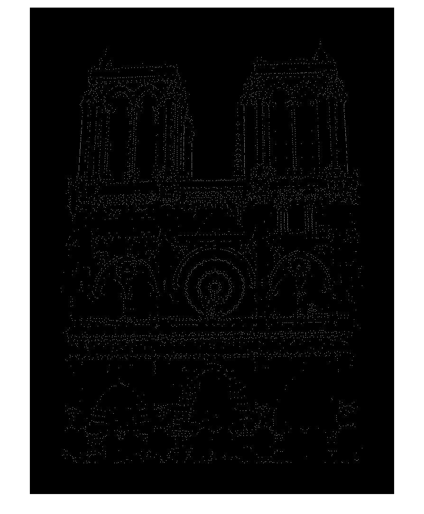 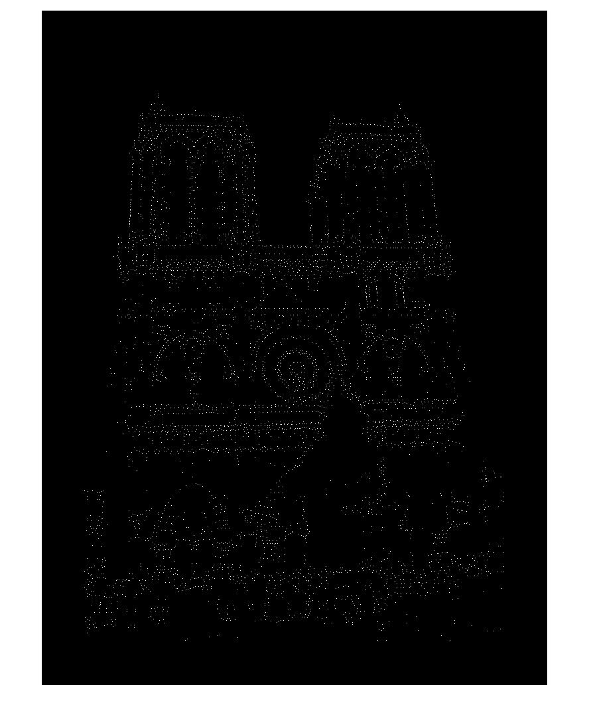 |
In this step we first calculate the gradient magnitude and gradient direction at each pixel in the image. Now, for each interest point we extract a patch of feature_width × feature_width. We then divide this region into further 4 × 4 blocks by looping in each direction with a step size of feature_width / 4. For each such subpatch we will create a histogram by adding the gradient magnitude to the correct bin based on the gradient direction. The 360° space is divided into 8 bins. The imgradient function of Matlab outputs gradient direction in the range of [-180,180]. Therefore, to find the bin index we use the following formula:
bin_idx = min(floor((Gdir_subpatch(l) + 180)/45) + 1, 8);
This algorithm looks at the ratio of the distance between the nearest neighbor and the second nearest neighbor. The smaller this ratio the better as this means that the nearest neighbor for the key point under consideration strongly matches the key point. Using pdist2 function of matrix we can calculate the pairwise distance function between all the pairs formed by the two feature sets. We then simply find the nearest 2 neighbors and calculate the ratio and noting the nearest neighbor. The top num_features points(i.e. their indices) are then returned.
I also played around with some parameters and observed the following results (on the Notre Dame pair):
Feature width |
Accuracy (%) |
|---|---|
| 16 | 95 |
| 32 | 99 |
Number of histogram orientations |
Accuracy (%) |
|---|---|
| 4 | 97 |
| 8 | 99 |
Following are the results obtained from the best combination of parameters for each pair of image:
Notre Dame : 99% accuracy |
|---|
| 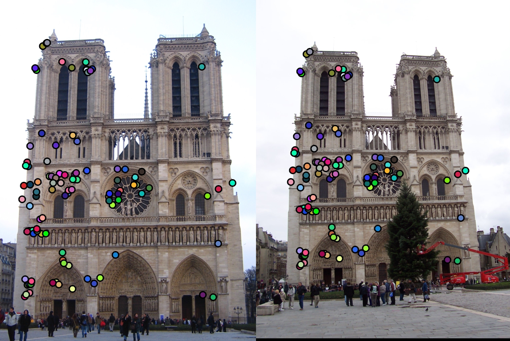 |
| 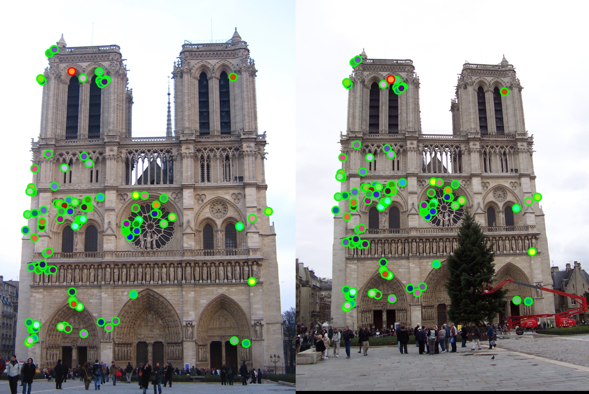 |
| 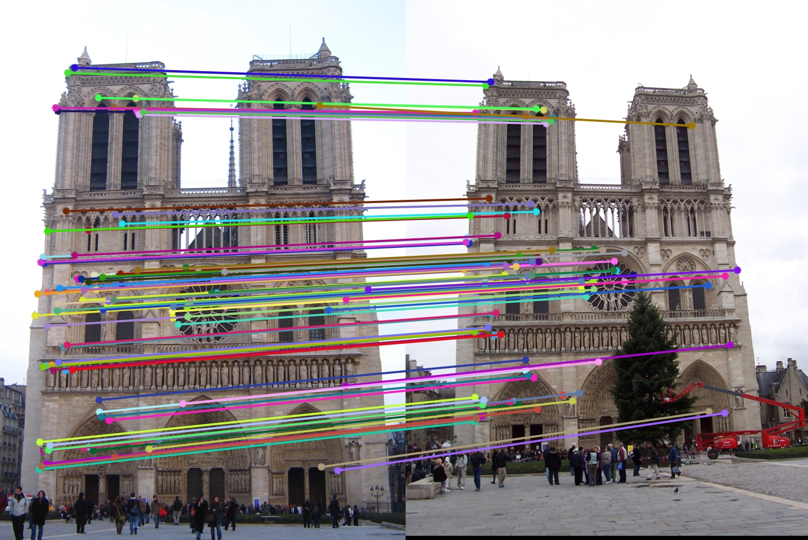 |
Mount Rushmore : 100% accuracy |
|---|
| 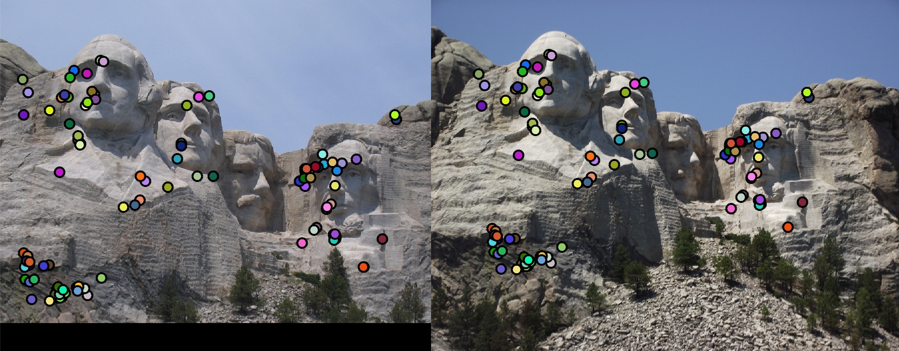 |
| 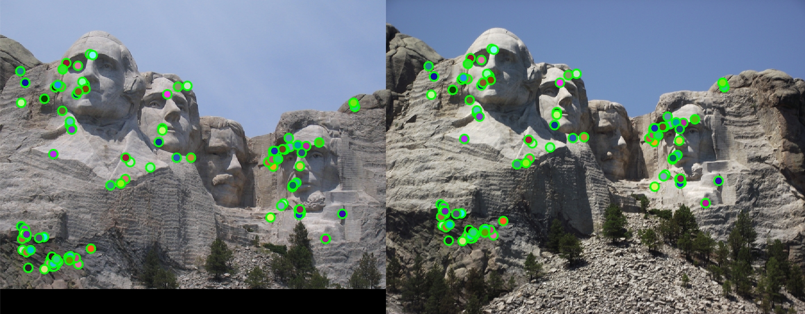 |
| 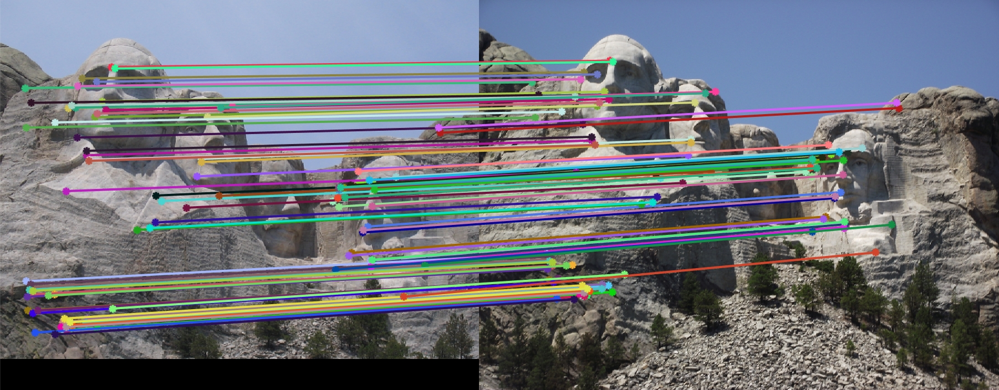 |
Episcopal Gaudi : 22% accuracy |
|---|
| 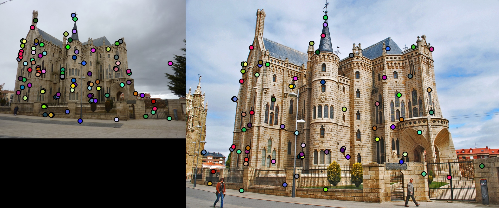 |
| 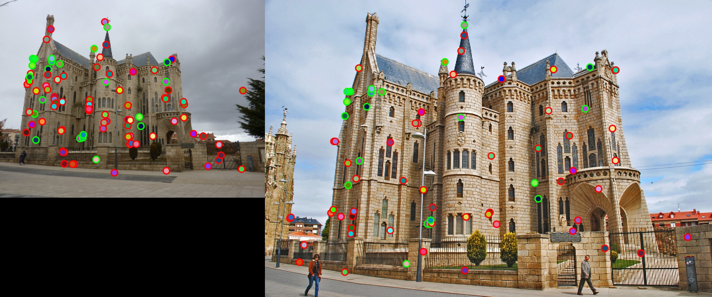 |
| 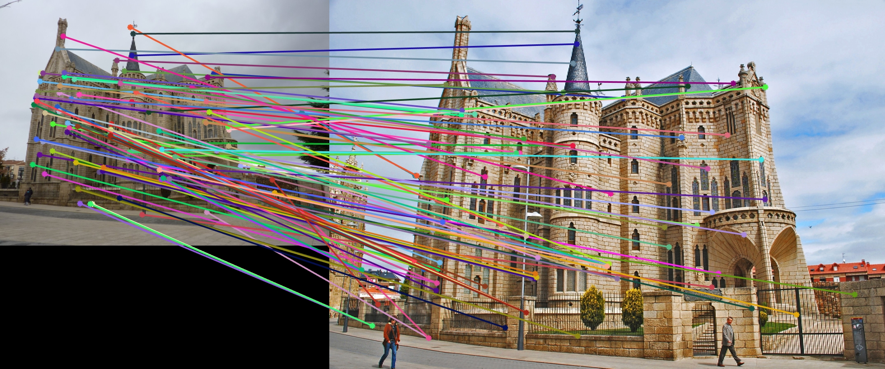 |
kd-tree:
Instead of calculating the pairwise distances we can make the code faster by making use of kd-trees. kd-trees divide the data space by partitioning it along alternate axis. While searching starting from the root we go left or right depending on whether the value is smaller or larger than the current node. We keep doing this until we hit a leaf. The tree is then unwinded and if the current node has distance less than the current nearest then it is the nearest node. We also have to search whether there are closer points on the other side of the tree. This can be done by creating a hypersphere around the current point with the radius same as the distance of nearest point and checking whether it intersects the splitting hyperplane on the other side. If yes then we need to consider points on the other side of the tree as well and follow the same recursive search or else we can continue unwinding until we reach the root.
PCA:
By making use of principal component analysis we can reduce the dimension of the 128 dimension SIFT vector to number of components that we want. I chose 32. This in turn should further optimize the speed at which the code runs as we are now calculating distances on 32 dimension vectors rather than 128. The PCA basis was obtained by analyzing the images from extra data that was provided. The total explained variance from the first 32 components was 57.51% which means there isn't too much redundancy when it comes to the feature vectors. Nonetheless, by making the feature vector 1/4th the 57.51% of explained variance was good enough. The timing and accuracy results obtained on the Notre Dame pair of images by making use of kd-tree and PCA can be summarized by the table below:
kd-tree |
PCA |
Time (seconds) |
Accuracy (%) |
|---|---|---|---|
| ✗ | ✗ | 1.79 | 99 |
| ✗ | ✓ | 0.41 | 96 |
| ✓ | ✗ | 7.82 | 99 |
| ✓ | ✓ | 1.70 | 96 |
Here we observe that the accuracy decreases a bit with PCA and this is expected as we are losing information on doing PCA. However, with PCA the speed increases significantly (speedup of at least 4x is achieved). kd-trees in this case perform significantly worse than pairwise distance. I suspect this is due to the fact that in my case I do not have significantly high number of points (the points are in 1000s not millions) and the overhead of a kd-tree is what is slowing it down.